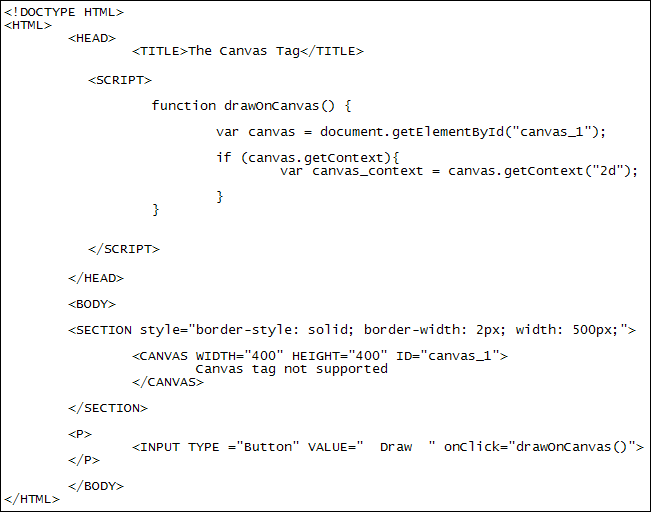

The HTML5 Canvas tag and Javascript
Ongoing HTML5 Canvas Tutorial: 1 2 3 4 5 6 7 8 9 10 11 12 13 14 15
New to HTML5 is the CANVAS tag. This is a blank surface that allows you to add things like shapes, images, text, and perform animation. In fact, whole games have been written in Javascript with the CANVAS tag. Let's have a look at the basics. First, though, download our template file for the canvas section: The HTML 5 Canvas Template. This will save you from having to type it all out for this and the subsequent lessons.
Getting Started with the Canvas Tag
The HTML for the canvas tag is fairly simple. It's just this:
<CANVAS></CANVAS>
You then add height and width attributes:
<CANVAS HEIGHT="400" WIDTH="500"></CANVAS>
To get at the canvas with Javascript, add an ID:
<CANVAS HEIGHT="400" WIDTH="500" ID="canvas_1"></CANVAS>
For browsers that don't support the canvas tag, you can add some text between the two tags:
<CANVAS HEIGHT="400" WIDTH="500"
ID="canvas_1">
Your browser is like really old, dude - no canvas support!
</CANVAS>
Because the HTML5 canvas is a blank space, we'll add a border round it:
<SECTION style="border-style: solid; border-width: 2px; width: 500px;">
<CANVAS HEIGHT="400" WIDTH="500"
ID="canvas_1">
Your browser is like really old, dude - no canvas support!
</CANVAS>
</SECTION>
Let's also add a button to the page. When the button is clicked a function can be called that draws to the canvas:
<P>
<INPUT TYPE ="Button" VALUE=" Draw " onClick="drawOnCanvas()">
</P>
So all of the basic code you should have is this:

The first line for your drawCanvas function is this:
var canvas = document.getElementById("canvas_1");
This just gets a reference to the HTML canvas in betwen the two BODY tags.
The next thing you need to do is a Javascript check to see if the browser supports a method called getContext:
if ( canvas.getContext ) {
}
The context is a 2D or 3D drawing surface (there's not much support for the 3D context in any browser, at the moment). If the getContext method is not supported, you can add an error message with an ELSE part. We'll leave it off, though.
If getContext is supported you can get a reference to the 2D context like this:
if ( canvas.getContext ) {
var canvas_context = canvas.getContext("2d");
}
After the equal sign, we have our canvas variable from the first line. After a dot comes the getContext method. In between the round brackets of getContext we have 2D between quote marks. (You would change this to 3D if there was support for it, and you fancied doing a bit of 3D drawing.)
You can add an alert box in there, just to see if everything is working properly. You can always comment it out, once we get going:
if ( canvas.getContext ) {
var canvas_context = canvas.getContext("2d");
alert("2D context supported");
}
Click your DRAW button and you should see the alert message popup. If not,
go through your code and locate your errors.
In the next part, you'll learn how to draw shapes on your canvas.